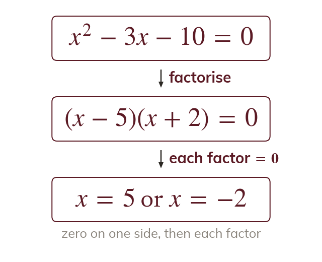
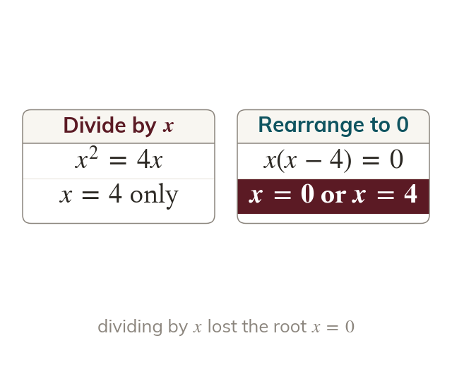
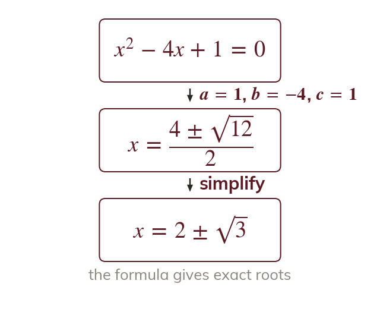
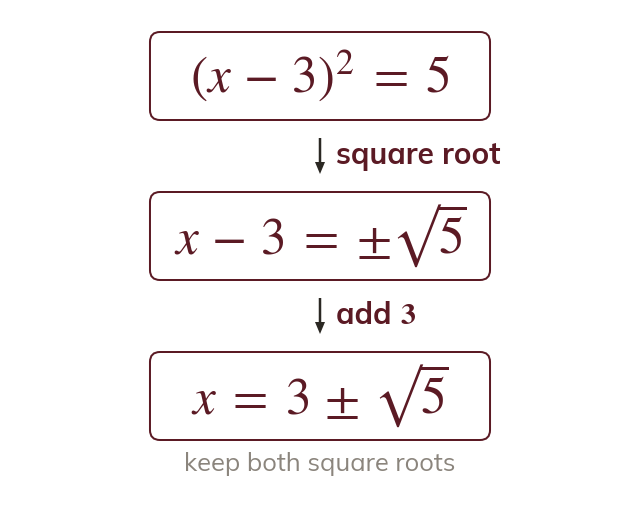
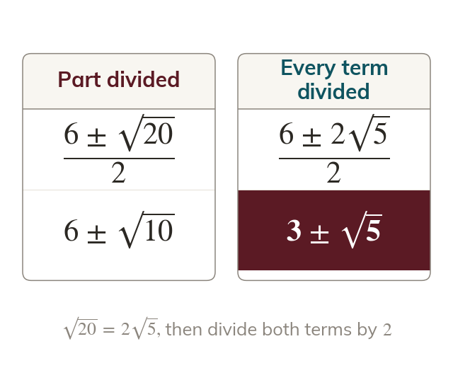

A product of zero
If two numbers multiply to give zero, at least one of them is zero. So a quadratic must equal zero before it is factorised.
Quadratic equations run through the whole A level course, and curves, inequalities, motion and the discriminant all rest on them. Today gives three routes to the roots; next lesson, completing the square, shows where the formula comes from.
Work down the page at your own pace. Write every answer in your book first, then click to check it.
Read each card, then follow the worked examples one step at a time.

If two numbers multiply to give zero, at least one of them is zero. So a quadratic must equal zero before it is factorised.

An equation that does not equal zero is rearranged first. Dividing both sides by throws away the root
Pick an answer. If it's wrong, the feedback tells you which mistake it was.
Write the blanks in your book first, then tap each one to check.
Read each card, then follow the worked examples one step at a time.

Some quadratics have roots that are not whole numbers or fractions. The quadratic formula finds the roots of any quadratic.

An equation in the form is solved by square rooting both sides. The positive and the negative root both count.

Leave roots exact unless a decimal is asked for. Simplify the surd, then divide every term of the top by the bottom.
Pick an answer. If it's wrong, the feedback tells you which mistake it was.
Write the blanks in your book first, then tap each one to check.
Finished? Next lesson: 2.2 Completing the Square.
For each skill, tap the one that is true for you today. Your Revise pages start with anything you mark Not yet.
Your ratings are saved on this device only.
Log in, then search for a code to practise that skill.